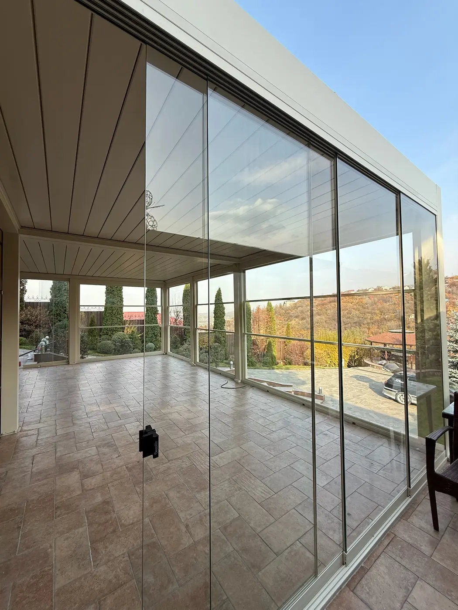

Пергола — не готовый товар стандартного размера, а архитектурная система, которую проектируют под конкретный объект. Главный исходный параметр — площадь террасы: разная длина и ширина означают разную квадратуру, количество модулей и объём материалов.
Почему нельзя назвать одну цену
Даже две террасы одинаковой площади могут потребовать разной конструкции. На расчёт влияют способ крепления к зданию, необходимость отдельных опор, высота, ветровая и снеговая обстановка, доступ к месту монтажа и выбранный тип крыши.
Достаточно фотографии объекта, примерных длины, ширины и высоты, адреса и краткого описания того, как вы хотите использовать террасу.
Основные составляющие расчёта
- Размер и конфигурация. Площадь, количество модулей, пролёты и число опор.
- Тип перголы. Тентовая и биоклиматическая системы отличаются материалом крыши и механикой.
- Дополнительное закрытие. ZIP-экраны, остекление и их сочетание.
- Оснащение. Освещение, автоматика, датчики и выбранный вариант управления.
- Условия объекта. Основание, примыкания, доставка и сложность монтажа.

Зачем нужен замер
Предварительное предложение помогает понять порядок бюджета и возможные варианты. После этого специалист выезжает на объект, фиксирует точные размеры, делает фото и видео участка. Данные получает технический отдел, который готовит визуализацию и проверяет конфигурацию.
Финальное коммерческое предложение формируется уже на основании точных размеров, выбранного цвета и исполнения. Такой порядок снижает риск неожиданных изменений во время производства и монтажа.
Как быстрее получить полезный ответ
Не обязательно заранее разбираться во всех системах. Расскажите, нужна ли вам летняя тень или круглогодичная терраса, важна ли защита от ветра и планируется ли остекление. По этим вводным IGS Outdoor предложит несколько подходящих сценариев, а не одну случайную комплектацию.